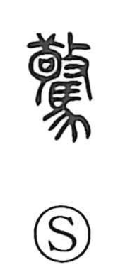

驚

Kun: odoroku, odorokasu | On: kyou
to be surprised ・ to be startled ・ to frighten ・ to be amazed
Explanation
A phono-semantic character: the horse element 馬 supplies the sense, while 敬 serves as the phonetic and also evokes the ritual act of admonishing—originally even striking—a supplicant. Because horses are especially quick to startle, the graph pictures a horse thrown into alarm, and so it comes to mean being surprised, frightened, or filled with wonder. The word 駭, seen in the compound 驚駭, likewise originally referred to a startled horse.